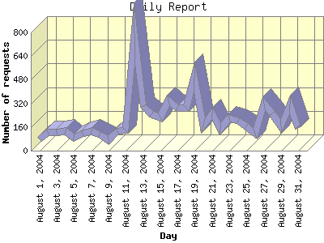

Report generated by Analog 5.91beta1 and Report Magic 2.21
|
Web Server Statistics for "Harish Narayanan (hnarayan) - August 2004" Report generated by Analog 5.91beta1 and Report Magic 2.21 |
The Daily Report identifies the activity for each day within the reporting period. Remember that one page hit can result in several server requests as the images for each page are loaded.

| Day | Number of requests | Number of bytes transferred | Percentage of the bytes | Percentage of the requests | |
|---|---|---|---|---|---|
| 1. | August 1, 2004 | 74 | 1.171 MB | 0.81% | 1.10% |
| 2. | August 2, 2004 | 127 | 3.617 MB | 2.51% | 1.89% |
| 3. | August 3, 2004 | 124 | 3.874 MB | 2.69% | 1.85% |
| 4. | August 4, 2004 | 129 | 1.349 MB | 0.94% | 1.92% |
| 5. | August 5, 2004 | 90 | 3.482 MB | 2.42% | 1.34% |
| 6. | August 6, 2004 | 117 | 1.884 MB | 1.31% | 1.74% |
| 7. | August 7, 2004 | 133 | 2.715 MB | 1.88% | 1.98% |
| 8. | August 8, 2004 | 112 | 3.496 MB | 2.43% | 1.67% |
| 9. | August 9, 2004 | 71 | 1.228 MB | 0.85% | 1.06% |
| 10. | August 10, 2004 | 132 | 2.434 MB | 1.69% | 1.97% |
| 11. | August 11, 2004 | 135 | 2.741 MB | 1.90% | 2.01% |
| 12. | August 12, 2004 | 796 | 7.322 MB | 5.08% | 11.86% |
| 13. | August 13, 2004 | 299 | 2.836 MB | 1.97% | 4.45% |
| 14. | August 14, 2004 | 247 | 4.888 MB | 3.39% | 3.68% |
| 15. | August 15, 2004 | 225 | 2.374 MB | 1.65% | 3.35% |
| 16. | August 16, 2004 | 337 | 6.569 MB | 4.56% | 5.02% |
| 17. | August 17, 2004 | 292 | 4.729 MB | 3.28% | 4.35% |
| 18. | August 18, 2004 | 292 | 9.547 MB | 6.62% | 4.35% |
| 19. | August 19, 2004 | 499 | 11.923 MB | 8.27% | 7.43% |
| 20. | August 20, 2004 | 172 | 3.845 MB | 2.67% | 2.56% |
| 21. | August 21, 2004 | 253 | 3.032 MB | 2.10% | 3.77% |
| 22. | August 22, 2004 | 147 | 1.724 MB | 1.20% | 2.19% |
| 23. | August 23, 2004 | 220 | 2.504 MB | 1.74% | 3.28% |
| 24. | August 24, 2004 | 204 | 12.175 MB | 8.45% | 3.04% |
| 25. | August 25, 2004 | 166 | 6.795 MB | 4.71% | 2.47% |
| 26. | August 26, 2004 | 117 | 1.657 MB | 1.15% | 1.74% |
| 27. | August 27, 2004 | 320 | 3.384 MB | 2.35% | 4.77% |
| 28. | August 28, 2004 | 251 | 3.441 MB | 2.39% | 3.74% |
| 29. | August 29, 2004 | 165 | 11.846 MB | 8.22% | 2.46% |
| 30. | August 30, 2004 | 314 | 11.671 MB | 8.10% | 4.68% |
| 31. | August 31, 2004 | 153 | 3.864 MB | 2.68% | 2.28% |
Most active day August 12, 2004 : 297 pages sent. 796 requests handled. 7,677,550.00 served.
Daily average: 216 requests handled. 4.649 MB served.
This report was generated on November 16, 2004 13:58.
Report time frame August 1, 2004 00:05 to August 31, 2004 23:36.
| Web statistics report produced by: | |
 Analog 5.91beta1 Analog 5.91beta1 |  Report Magic 2.21 Report Magic 2.21 |